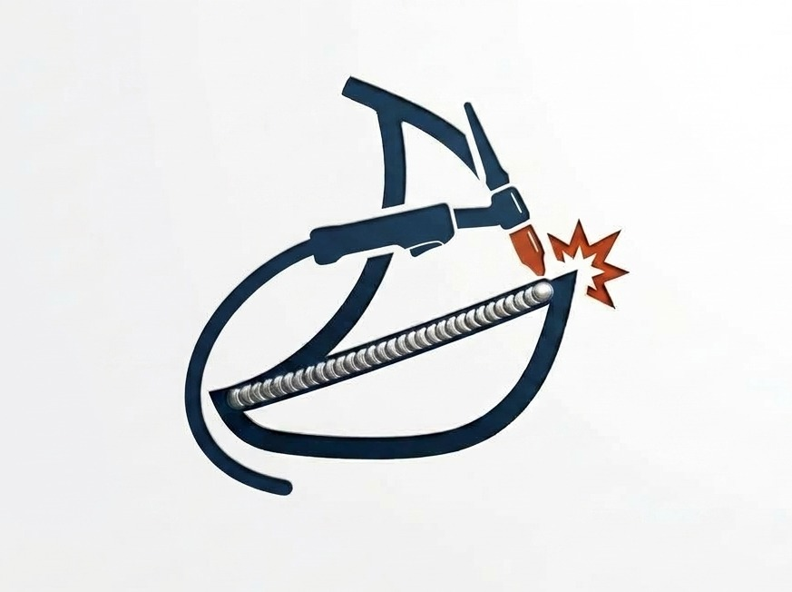
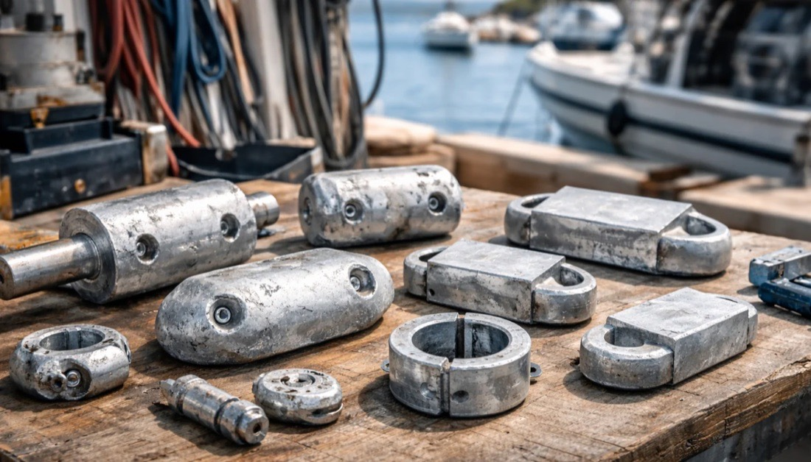
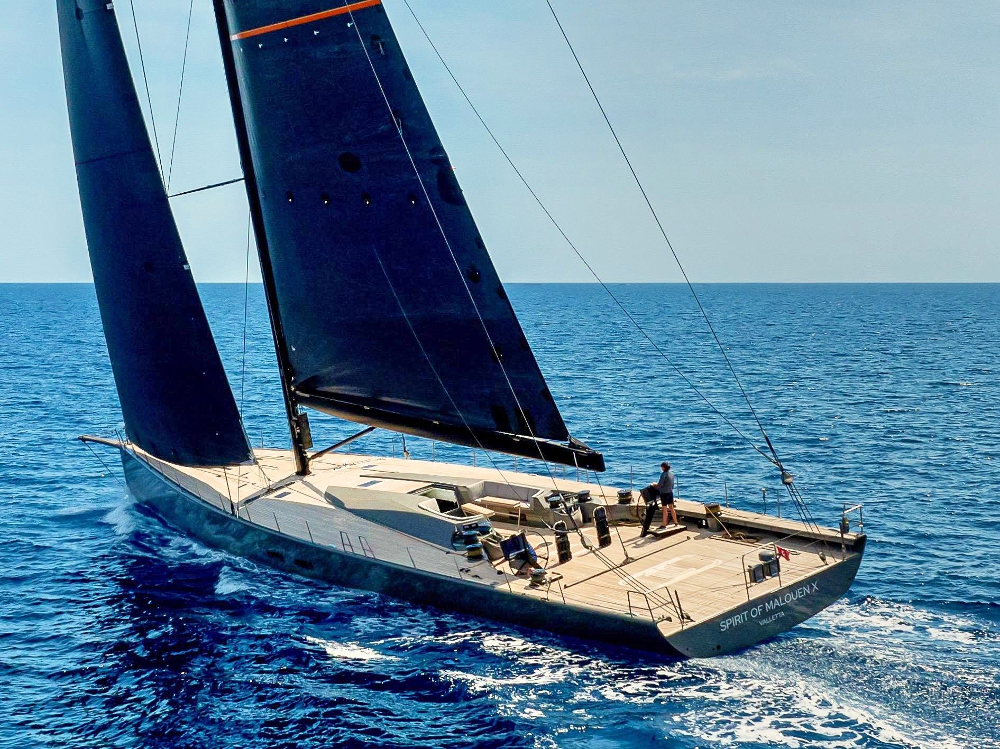
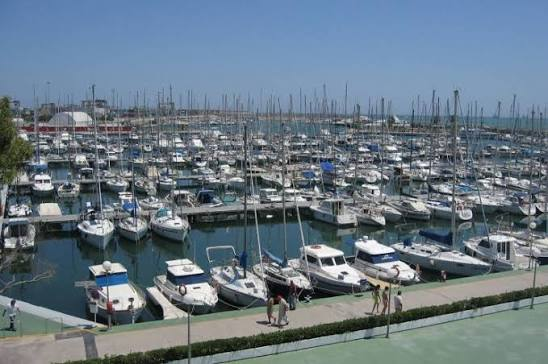
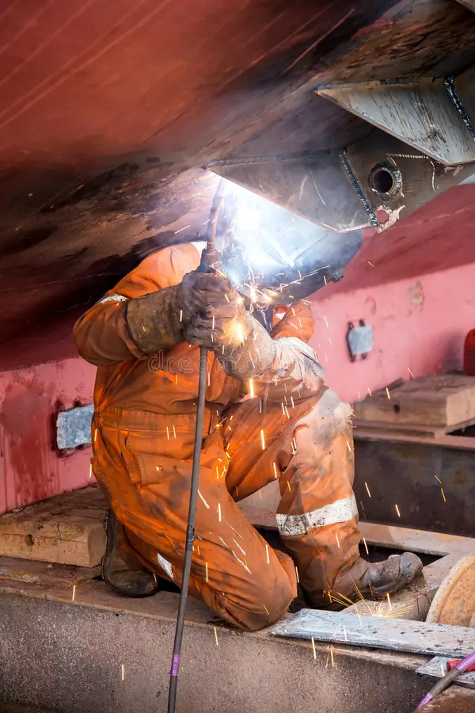
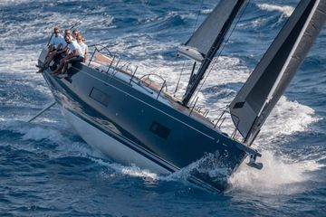
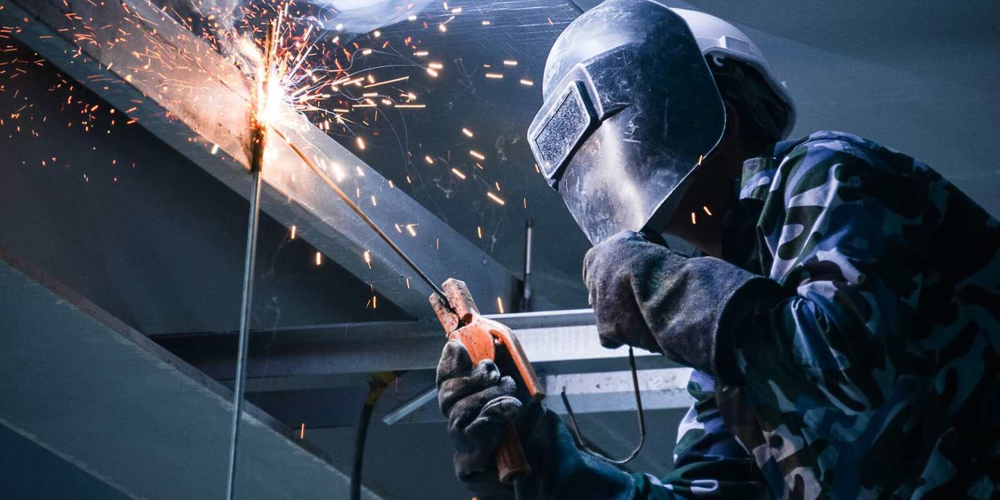

<meta charset="UTF-8">
<meta name="viewport" content="width=device-width, initial-scale=1">
<title>Soldadura inoxidable náutica en Valencia | INOX ESTAY</title>
<meta name="description" content="Soldadura de acero inoxidable 316L para barcos en Valencia: pasamanos, candeleros, arcos, davits y herrajes a medida. A pie de amarre o en taller. Presupuesto en menos de 24 h.">
<meta name="robots" content="index, follow, max-image-preview:large">
<meta name="theme-color" content="#0d151d">
<meta property="og:title" content="Soldadura inoxidable náutica en Valencia | INOX ESTAY">
<meta property="og:site_name" content="INOX ESTAY">
<meta name="twitter:card" content="summary_large_image">
<meta property="og:description" content="Fabricamos, sustituimos e instalamos pasamanos, candeleros, arcos y herrajes en inoxidable 316L. Presupuesto en menos de 24h.">
<link rel="canonical" href="https://inoxestay.es/">
<link rel="alternate" hreflang="es" href="https://inoxestay.es/">
<link rel="alternate" hreflang="x-default" href="https://inoxestay.es/">
<meta property="og:image" content="https://inoxestay.es/img/tig-tubo.jpg">
<meta property="og:url" content="https://inoxestay.es/">
<meta property="og:locale" content="es_ES">
<meta property="og:type" content="website">
<script type="application/ld+json">
{
 "@context": "https://schema.org",
 "@graph": [
  {
   "@type": [
    "LocalBusiness",
    "ProfessionalService"
   ],
   "@id": "https://inoxestay.es/#negocio",
   "name": "INOX ESTAY",
   "alternateName": "Inox Estay Soldadura Náutica",
   "description": "Soldadura de acero inoxidable náutico en Valencia: pasamanos, candeleros, arcos y herrajes en inoxidable 316L.",
   "url": "https://inoxestay.es/",
   "image": "https://inoxestay.es/img/tig-tubo.jpg",
   "logo": "https://inoxestay.es/img/favicon.png",
   "telephone": [
    "+34658928308",
    "+34680663605"
   ],
   "areaServed": [
    {
     "@type": "City",
     "name": "Valencia"
    },
    {
     "@type": "AdministrativeArea",
     "name": "Provincia de Valencia"
    }
   ],
   "knowsAbout": [
    "Soldadura de acero inoxidable",
    "Soldadura TIG",
    "Inoxidable 316L",
    "Pasivado de inoxidable",
    "Herrajes náuticos",
    "Pasamanos y candeleros"
   ],
   "hasOfferCatalog": {
    "@type": "OfferCatalog",
    "name": "Servicios de soldadura náutica",
    "itemListElement": [
     {
      "@type": "Offer",
      "itemOffered": {
       "@type": "Service",
       "name": "Pasamanos, candeleros y púlpitos en inoxidable"
      }
     },
     {
      "@type": "Offer",
      "itemOffered": {
       "@type": "Service",
       "name": "Arcos de popa y soportes de equipamiento"
      }
     },
     {
      "@type": "Offer",
      "itemOffered": {
       "@type": "Service",
       "name": "Davits, pescantes y soportes de motor fueraborda"
      }
     },
     {
      "@type": "Offer",
      "itemOffered": {
       "@type": "Service",
       "name": "Herrajes y piezas a medida en 316L"
      }
     },
     {
      "@type": "Offer",
      "itemOffered": {
       "@type": "Service",
       "name": "Recuperación y pasivado de inoxidable"
      }
     },
     {
      "@type": "Offer",
      "itemOffered": {
       "@type": "Service",
       "name": "Estructuras de pantalán y remolques"
      }
     }
    ]
   }
  },
  {
   "@type": "WebSite",
   "@id": "https://inoxestay.es/#web",
   "url": "https://inoxestay.es/",
   "name": "INOX ESTAY",
   "inLanguage": "es-ES",
   "publisher": {
    "@id": "https://inoxestay.es/#negocio"
   }
  },
  {
   "@type": "FAQPage",
   "mainEntity": [
    {
     "@type": "Question",
     "name": "¿Qué tipo de acero inoxidable se usa en barcos?",
     "acceptedAnswer": {
      "@type": "Answer",
      "text": "En ambiente marino se usa normalmente inoxidable austenítico 316 o 316L, que resiste mejor el salitre que el 304. Trabajamos en 316L y aluminio."
     }
    },
    {
     "@type": "Question",
     "name": "¿Qué es el pasivado y por qué importa?",
     "acceptedAnswer": {
      "@type": "Answer",
      "text": "El pasivado es el tratamiento final que elimina el hierro libre y restaura la capa protectora del inoxidable tras soldar y pulir. Sin él, la pieza puede mancharse de óxido incluso siendo 316L."
     }
    },
    {
     "@type": "Question",
     "name": "¿Trabajáis a pie de amarre o hay que llevar la pieza al taller?",
     "acceptedAnswer": {
      "@type": "Answer",
      "text": "Según el trabajo: a pie de amarre, en el club, en seco o en taller. Valoramos la pieza en persona o por fotos y le decimos cuál es la mejor opción."
     }
    },
    {
     "@type": "Question",
     "name": "¿Cuánto tarda el presupuesto?",
     "acceptedAnswer": {
      "@type": "Answer",
      "text": "Respondemos con presupuesto en menos de 24 horas. El precio se entrega por escrito antes de empezar cualquier trabajo."
     }
    },
    {
     "@type": "Question",
     "name": "¿Qué piezas fabricáis o reparáis?",
     "acceptedAnswer": {
      "@type": "Answer",
      "text": "Pasamanos, candeleros, púlpitos, arcos de popa, soportes de equipo, davits, soportes de motor fueraborda, herrajes a medida y recuperación de inoxidable con óxido o soldaduras abiertas."
     }
    },
    {
     "@type": "Question",
     "name": "¿En qué zona trabajáis?",
     "acceptedAnswer": {
      "@type": "Answer",
      "text": "En Valencia y alrededores, con base en un club náutico. Llámenos o escriba por WhatsApp y confirmamos si llegamos a su amarre."
     }
    }
   ]
  }
 ]
}
</script>
<link rel="icon" type="image/png" href="img/favicon.png">
<link rel="preconnect" href="https://fonts.googleapis.com">
<link rel="stylesheet" href="https://fonts.googleapis.com/css2?family=Inter:wght@400;500;600;700;800;900&display=swap">

<style>
  :root {
    --bg: #f5f6f5;
    --surface: #ffffff;
    --surface-2: #eceeec;
    --ink: #14181a;
    --ink-soft: #565f63;
    --ink-faint: #8b9296;
    --line: #d8dcda;
    --steel: #3d4750;
    --navy: #0d151d;
    --heat: #b5813e;
    --heat-ink: #fffaf2;
    --heat-ring: rgba(181, 129, 62, 0.35);
    --shadow: 0 1px 2px rgba(20, 24, 26, 0.05), 0 10px 28px -16px rgba(20, 24, 26, 0.18);
    --shadow-lg: 0 20px 50px -20px rgba(13, 21, 29, 0.35);
  }
  @media (prefers-color-scheme: dark) {
    :root:not([data-theme="light"]) {
      --bg: #0f1317; --surface: #171d22; --surface-2: #1e252b;
      --ink: #eef1f2; --ink-soft: #a7b0b4; --ink-faint: #6d767a; --line: #293136;
      --steel: #aeb8c0; --navy: #060a0e; --heat: #dba05c; --heat-ink: #221607;
      --heat-ring: rgba(219, 160, 92, 0.35);
      --shadow: 0 1px 2px rgba(0,0,0,0.4), 0 14px 32px -16px rgba(0,0,0,0.6);
      --shadow-lg: 0 24px 60px -20px rgba(0,0,0,0.6);
    }
  }
  :root[data-theme="dark"] {
    --bg: #0f1317; --surface: #171d22; --surface-2: #1e252b;
    --ink: #eef1f2; --ink-soft: #a7b0b4; --ink-faint: #6d767a; --line: #293136;
    --steel: #aeb8c0; --navy: #060a0e; --heat: #dba05c; --heat-ink: #221607;
    --heat-ring: rgba(219, 160, 92, 0.35);
    --shadow: 0 1px 2px rgba(0,0,0,0.4), 0 14px 32px -16px rgba(0,0,0,0.6);
    --shadow-lg: 0 24px 60px -20px rgba(0,0,0,0.6);
  }

  * { box-sizing: border-box; }
  html { scroll-behavior: smooth; }
  body {
    margin: 0; background: var(--bg); color: var(--ink);
    font-family: "Inter", -apple-system, "Segoe UI", sans-serif;
    -webkit-font-smoothing: antialiased; line-height: 1.5;
  }
  img, svg { max-width: 100%; display: block; }
  a { color: inherit; }
  .container { max-width: 1120px; margin: 0 auto; padding: 0 24px; }
  section { padding: clamp(56px, 9vw, 108px) 0; }
  h1, h2, h3 { font-weight: 700; text-wrap: balance; letter-spacing: -0.01em; margin: 0; }
  .eyebrow {
    font-size: 11.5px; font-weight: 700; letter-spacing: 0.14em; text-transform: uppercase;
    color: var(--heat); margin: 0 0 12px;
  }
  .lede { color: var(--ink-soft); font-size: 17px; max-width: 62ch; margin: 16px 0 0; }
  .btn {
    display: inline-flex; align-items: center; gap: 8px; font-weight: 600; font-size: 15px;
    padding: 13px 22px; border-radius: 8px; text-decoration: none; border: 1px solid transparent;
    transition: transform .1s, box-shadow .15s, background .15s;
  }
  .btn-primary { background: var(--heat); color: var(--heat-ink); box-shadow: 0 8px 20px -10px var(--heat-ring); }
  .btn-primary:hover { box-shadow: 0 10px 24px -8px var(--heat-ring); }
  .btn-primary:active { transform: translateY(1px); }
  .btn-ghost { background: rgba(255,255,255,0.08); color: #fff; border-color: rgba(255,255,255,0.35); backdrop-filter: blur(6px); }
  .btn-ghost:hover { border-color: rgba(255,255,255,0.6); }
  .btn-ghost-light { background: transparent; color: var(--ink); border-color: var(--line); }
  .btn-ghost-light:hover { border-color: var(--ink-faint); }

  header.top {
    position: sticky; top: 0; z-index: 30; background: color-mix(in srgb, var(--bg) 88%, transparent);
    backdrop-filter: blur(10px); border-bottom: 1px solid var(--line);
  }
  header.top .bar { display: flex; align-items: center; justify-content: space-between; flex-wrap: wrap; row-gap: 8px; padding: 16px 24px; }
  .brand { display: flex; align-items: center; gap: 16px; }
  .brand img {
    width: 46px; height: 46px; display: block; object-fit: cover; object-position: 50% 45%;
    border-radius: 12px; border: 1px solid var(--line); background: var(--surface);
  }
  .wordmark { font-weight: 800; font-size: 21px; letter-spacing: 0.06em; }
  .wordmark .descriptor {
    display: block; font-weight: 500; font-size: 10.5px; letter-spacing: 0.08em;
    color: var(--ink-faint); text-transform: none; margin-top: 2px;
  }
  header.top .btn { padding: 10px 18px; font-size: 14px; background: var(--heat); color: var(--heat-ink); }
  .header-phones { display: flex; gap: 16px; font-size: 13px; font-weight: 600; }
  .header-phones a { color: var(--ink); text-decoration: none; }
  .header-phones a:hover { color: var(--heat); }
  @media (max-width: 1024px) { .header-phones { display: none; } }

  /* hero */
  .hero {
    position: relative; min-height: 88vh; display: flex; align-items: flex-end;
    padding: 0; margin-top: -1px;
  }
  .hero-bg {
    position: absolute; inset: 0; z-index: 0;
    background-image:
      linear-gradient(180deg, rgba(6,10,14,0.55) 0%, rgba(6,10,14,0.35) 35%, rgba(6,10,14,0.92) 100%),
      url('img/tig-tubo.jpg');
    background-size: cover; background-position: 55% 55%;
  }
  .hero-content { position: relative; z-index: 1; padding: 64px 0 60px; color: #fff; width: 100%; }
  .hero-content .eyebrow { color: var(--heat); }
  .hero h1 {
    font-size: clamp(36px, 5.6vw, 60px); line-height: 1.04; color: #fff; max-width: 16ch;
  }
  .hero .lede { color: rgba(255,255,255,0.82); font-size: 18px; }
  .hero-actions { margin-top: 32px; display: flex; gap: 12px; flex-wrap: wrap; }
  .hero-meta {
    margin-top: 34px; display: flex; gap: 22px; flex-wrap: wrap; font-size: 13px;
    color: rgba(255,255,255,0.65); border-top: 1px solid rgba(255,255,255,0.18); padding-top: 20px;
  }
  .hero-meta span { display: flex; align-items: center; gap: 7px; }
  .hero-meta .dot-sep { width: 4px; height: 4px; border-radius: 50%; background: var(--heat); }
  @media (max-width: 600px) {
    .hero { min-height: 70vh; }
    .hero .container { padding: 0 32px; }
    .hero-content { padding: 40px 0 36px; text-align: center; }
    .hero-actions { justify-content: center; }
    .hero-meta { justify-content: center; }
    .hero .lede { margin-left: auto; margin-right: auto; }
  }

  /* section headers */
  .sec-head { max-width: 640px; margin-bottom: 44px; }
  .sec-head h2 { font-size: clamp(24px, 3vw, 32px); }
  .sec-head.center { margin-left: auto; margin-right: auto; text-align: center; }

  /* servicios */
  .services-grid { display: grid; grid-template-columns: repeat(3, 1fr); gap: 1px; background: var(--line);
    border: 1px solid var(--line); border-radius: 14px; overflow: hidden; }
  @media (max-width: 860px) { .services-grid { grid-template-columns: repeat(2, 1fr); } }
  @media (max-width: 560px) { .services-grid { grid-template-columns: 1fr; } }
  .svc { background: var(--surface); padding: 30px 26px; display: flex; flex-direction: column; gap: 14px; transition: background .15s; }
  .svc:hover { background: var(--surface-2); }
  .svc .icon { width: 40px; height: 40px; color: var(--heat); }
  .svc h3 { font-size: 16.5px; }
  .svc p { margin: 0; font-size: 14px; color: var(--ink-soft); line-height: 1.55; }

  /* materiales */
  .mat-grid { display: grid; grid-template-columns: 1fr 1fr; gap: 44px; align-items: center; }
  @media (max-width: 860px) { .mat-grid { grid-template-columns: 1fr; } }
  .mat-list { list-style: none; margin: 24px 0 0; padding: 0; display: flex; flex-direction: column; gap: 18px; }
  .mat-list li { display: flex; gap: 14px; }
  .mat-list .dot { flex: none; width: 8px; height: 8px; border-radius: 50%; background: var(--heat); margin-top: 7px; }
  .mat-list strong { display: block; font-size: 15px; margin-bottom: 2px; }
  .mat-list span { font-size: 14px; color: var(--ink-soft); }
  .mat-photo {
    aspect-ratio: 4/5; border-radius: 14px; overflow: hidden; box-shadow: var(--shadow-lg);
    border: 1px solid var(--line);
  }
  .mat-photo img { width: 100%; height: 100%; object-fit: cover; }

  /* proceso */
  .steps { display: grid; grid-template-columns: repeat(4, 1fr); gap: 26px; }
  @media (max-width: 860px) { .steps { grid-template-columns: repeat(2, 1fr); } }
  @media (max-width: 520px) { .steps { grid-template-columns: 1fr; } }
  .step { position: relative; padding-top: 6px; }
  .step .num {
    font-variant-numeric: tabular-nums; font-weight: 800; font-size: 13px; color: var(--heat);
    border: 1px solid var(--line); border-radius: 999px; width: 30px; height: 30px;
    display: flex; align-items: center; justify-content: center; margin-bottom: 14px;
  }
  .step h3 { font-size: 15.5px; margin-bottom: 6px; }
  .step p { margin: 0; font-size: 13.5px; color: var(--ink-soft); line-height: 1.55; }

  /* galeria */
  .gallery-band { background: var(--navy); }
  .gallery-band .sec-head h2, .gallery-band .eyebrow-light { color: #fff; }
  .gallery-band .eyebrow { color: var(--heat); }
  .gallery-band .lede { color: rgba(255,255,255,0.65); }
  .mosaic {
    display: grid; grid-template-columns: repeat(3, 1fr);
    grid-template-rows: clamp(220px, 26vw, 320px) clamp(160px, 18vw, 220px);
    gap: 10px; margin-top: 8px;
  }
  .mosaic figure { margin: 0; position: relative; border-radius: 10px; overflow: hidden; }
  .mosaic img { width: 100%; height: 100%; object-fit: cover; transition: transform .5s ease; }
  .mosaic figure:hover img { transform: scale(1.05); }
  .m1 { grid-column: 1 / 3; grid-row: 1 / 2; }
  .m2 { grid-column: 3 / 4; grid-row: 1 / 2; }
  .m3 { grid-column: 1 / 2; grid-row: 2 / 3; }
  .m4 { grid-column: 2 / 3; grid-row: 2 / 3; }
  .m5 { grid-column: 3 / 4; grid-row: 2 / 3; }
  @media (max-width: 760px) {
    .mosaic {
      grid-template-columns: repeat(2, 1fr);
      grid-template-rows: 220px 140px 140px;
    }
    .m1 { grid-column: 1 / 3; grid-row: 1 / 2; }
    .m2 { grid-column: 1 / 2; grid-row: 2 / 3; }
    .m3 { grid-column: 2 / 3; grid-row: 2 / 3; }
    .m4 { grid-column: 1 / 2; grid-row: 3 / 4; }
    .m5 { grid-column: 2 / 3; grid-row: 3 / 4; }
  }
  .mosaic-caption {
    margin-top: 16px; font-size: 12.5px; color: rgba(255,255,255,0.45); max-width: 60ch;
  }

  /* quien suelda */
  .who-welds {
    display: flex; gap: 20px; align-items: flex-start;
    background: color-mix(in srgb, var(--heat) 8%, var(--surface));
    border: 1px solid color-mix(in srgb, var(--heat) 30%, var(--line));
    border-radius: 14px; padding: 26px 28px; margin-bottom: 24px;
  }
  .who-welds .icon { flex: none; width: 30px; height: 30px; color: var(--heat); margin-top: 3px; }
  .who-welds h3 { font-size: 16.5px; margin-bottom: 6px; }
  .who-welds p { margin: 0; font-size: 14.5px; color: var(--ink-soft); line-height: 1.6; max-width: 65ch; }
  @media (max-width: 560px) { .who-welds { flex-direction: column; } }

  /* garantia */
  .trust {
    background: var(--surface); border: 1px solid var(--line); border-radius: 16px; box-shadow: var(--shadow);
    padding: clamp(28px, 4vw, 44px); display: grid; grid-template-columns: 1fr 1fr; gap: 36px;
  }
  @media (max-width: 860px) { .trust { grid-template-columns: 1fr; } }
  .trust-item { display: flex; gap: 14px; }
  .trust-item .icon { flex: none; width: 26px; height: 26px; color: var(--heat); margin-top: 2px; }
  .trust-item h3 { font-size: 15px; margin-bottom: 4px; }
  .trust-item p { margin: 0; font-size: 13.5px; color: var(--ink-soft); line-height: 1.5; }

  /* cobertura */
  .coverage-grid { display: grid; grid-template-columns: 1fr 1fr; gap: 24px; align-items: stretch; }
  @media (max-width: 860px) { .coverage-grid { grid-template-columns: 1fr; } }
  .cov-photo {
    aspect-ratio: 16/11; border-radius: 12px; overflow: hidden; box-shadow: var(--shadow);
    border: 1px solid var(--line); position: relative;
  }
  .cov-photo img { width: 100%; height: 100%; object-fit: cover; }
  .cov-photo .cap {
    position: absolute; left: 0; right: 0; bottom: 0; padding: 14px 16px;
    background: linear-gradient(0deg, rgba(6,10,14,0.75), transparent);
    color: #fff; font-size: 13px; font-weight: 500;
  }
  .coverage-note {
    margin-top: 22px; padding: 16px 18px; border-radius: 10px; background: var(--surface);
    border: 1px solid var(--line); font-size: 14px; color: var(--ink-soft); line-height: 1.6;
  }

  /* cta cierre */
  .cta-close {
    background: var(--navy); color: #fff; border-radius: 18px; padding: clamp(40px, 6vw, 64px);
    text-align: center; margin: 0 24px;
    background-image: linear-gradient(160deg, rgba(181,129,62,0.16), transparent 55%), var(--navy);
  }
  .cta-close h2 { color: #fff; font-size: clamp(24px, 3.2vw, 34px); }
  .cta-close p { color: rgba(255,255,255,0.65); margin: 12px 0 26px; }
  .cta-close .btn-primary { font-size: 16px; padding: 15px 28px; }

  footer.foot { border-top: 1px solid var(--line); margin-top: 80px; padding: 40px 0; }
  .foot-grid { display: flex; justify-content: space-between; flex-wrap: wrap; gap: 24px; font-size: 13.5px; color: var(--ink-faint); }
  .foot-grid a { text-decoration: none; }
  .foot-grid a:hover { color: var(--ink); }

  .faq { max-width: 820px; margin: 0 auto; }
  .faq details { border-top: 1px solid var(--line); padding: 18px 4px; }
  .faq details:last-child { border-bottom: 1px solid var(--line); }
  .faq summary { cursor: pointer; font-weight: 700; font-size: 1.05rem; color: var(--ink); list-style: none; display: flex; justify-content: space-between; gap: 16px; }
  .faq summary::-webkit-details-marker { display: none; }
  .faq summary::after { content: "+"; color: var(--heat); font-size: 1.4rem; line-height: 1; }
  .faq details[open] summary::after { content: "–"; }
  .faq p { color: var(--ink-soft); margin-top: 12px; line-height: 1.6; }
  .svc-more { display:inline-block; margin-top:10px; font-weight:600; color:var(--heat); text-decoration:none; font-size:.95rem; }
  .svc-more:hover { text-decoration:underline; }
</style>

<header class="top">
  <div class="bar">
    <div class="brand">
      
      <div class="wordmark">INOX ESTAY<span class="descriptor">Soldadura náutica — inoxidable 316L y aluminio</span></div>
    </div>
    <div class="header-phones">
      <a href="tel:+34658928308">658 92 83 08</a>
      <a href="tel:+34680663605">680 66 36 05</a>
    </div>
    <a class="btn" href="presupuesto.html">Solicitar presupuesto</a>
  </div>
</header>

<section class="hero">
  <div class="hero-bg" role="img" aria-label="Soldadura TIG de un tubo de acero inoxidable en taller"></div>
  <div class="container hero-content">
    <p class="eyebrow">Club náutico · Valencia</p>
    <h1>Soldadura de acero inoxidable náutico en Valencia</h1>
    <p class="lede">
      Fabricamos, sustituimos e instalamos pasamanos, candeleros, arcos y herrajes en
      inoxidable 316L, con pasivado final para que aguanten el salitre y no vuelvan a oxidarse.
    </p>
    <div class="hero-actions">
      <a class="btn btn-primary" href="presupuesto.html">Solicitar presupuesto</a>
      <a class="btn btn-ghost" href="#servicios">Ver servicios</a>
    </div>
    <div class="hero-meta">
      <span>316L y aluminio</span><span class="dot-sep"></span>
      <span>A pie de amarre o en taller</span><span class="dot-sep"></span>
      <span>Dirección técnica titulada</span>
    </div>
  </div>
</section>

<section id="servicios">
  <div class="container">
    <div class="sec-head">
      <p class="eyebrow">Servicios</p>
      <h2>Acabados de máxima calidad</h2>
      <p class="lede">Trabajos en inoxidable para cualquier necesidad, especializados en tratamiento náutico. Si el suyo no aparece aquí, probablemente también lo resolvemos — pregúntenos.</p>
    </div>
    <div class="services-grid">
      <div class="svc">
        <svg class="icon" viewBox="0 0 40 40" fill="none" stroke="currentColor" stroke-width="1.6"><path d="M6 30 L34 30 M10 30 L10 12 Q10 8 14 8 Q18 8 18 12 M22 30 L22 12 Q22 8 26 8 Q30 8 30 12"/></svg>
        <h3>Seguridad y paso a bordo</h3>
        <p>Pasamanos, candeleros, púlpitos, balcones de proa y popa, escalas de baño y puntos de amarre: sustituimos, ajustamos y fabricamos a medida.</p>
        <a class="svc-more" href="pasamanos-candeleros-inoxidable-valencia.html">Saber más →</a>
      </div>
      <div class="svc">
        <svg class="icon" viewBox="0 0 40 40" fill="none" stroke="currentColor" stroke-width="1.6"><path d="M8 32 L8 14 Q8 8 16 8 L28 8 M28 8 L34 8 M28 8 L28 14"/><circle cx="31" cy="8" r="2.2" fill="currentColor" stroke="none"/></svg>
        <h3>Arcos y soportes de equipamiento</h3>
        <p>Arcos de popa y soportes para placa solar, antena, radar y radiogoniómetro, dimensionados para el equipo concreto que llevan encima.</p>
        <a class="svc-more" href="arcos-popa-soportes-equipamiento-inoxidable.html">Saber más →</a>
      </div>
      <div class="svc">
        <svg class="icon" viewBox="0 0 40 40" fill="none" stroke="currentColor" stroke-width="1.6"><path d="M6 12 L20 12 L20 6 M20 6 L34 6 M34 6 L34 20 M10 12 L10 30 L30 30"/></svg>
        <h3>Manejo de auxiliar y motor</h3>
        <p>Davits, pescantes de neumática y soportes de motor fueraborda: refuerzo del punto de anclaje e instalación.</p>
        <a class="svc-more" href="davits-soportes-motor-fueraborda-inoxidable.html">Saber más →</a>
      </div>
      <div class="svc">
        <svg class="icon" viewBox="0 0 40 40" fill="none" stroke="currentColor" stroke-width="1.6"><path d="M8 20 L18 20 M14 14 L14 26 M22 8 L22 32 M28 12 L28 28 M22 20 L34 20"/></svg>
        <h3>Herrajes y piezas a medida</h3>
        <p>Cáncamos, bases de caña, tangones, estructuras de bimini y cualquier herraje que ya no exista de catálogo: se reproduce o se diseña desde cero en 316L.</p>
        <a class="svc-more" href="herrajes-piezas-a-medida-inoxidable-nautico.html">Saber más →</a>
      </div>
      <div class="svc">
        <svg class="icon" viewBox="0 0 40 40" fill="none" stroke="currentColor" stroke-width="1.6"><path d="M8 28 Q8 12 20 12 Q32 12 32 28" /><path d="M13 28 L27 28" stroke-dasharray="2 4"/></svg>
        <h3>Recuperación de inoxidable</h3>
        <p>Piezas con óxido, soldaduras abiertas o acabado perdido: repaso, pulido y pasivado para devolverlas a estado de servicio.</p>
        <a class="svc-more" href="recuperacion-pasivado-inoxidable-barcos.html">Saber más →</a>
      </div>
      <div class="svc">
        <svg class="icon" viewBox="0 0 40 40" fill="none" stroke="currentColor" stroke-width="1.6"><path d="M4 30 L36 30 M8 30 L8 22 L32 22 L32 30 M14 22 L14 14 M26 22 L26 14 M14 14 L26 14"/></svg>
        <h3>Estructuras en tierra</h3>
        <p>Pasarelas, barandillas de pantalán, rampas, portones y reparación de remolques.</p>
      </div>
    </div>
  </div>
</section>

<section>
  <div class="container">
    <div class="mat-grid">
      <div>
        <p class="eyebrow">Materiales y acabado</p>
        <h2>Por qué el acabado importa tanto como la soldadura</h2>
        <ul class="mat-list">
          <li><span class="dot"></span><div><strong>Inoxidable 316L</strong><span>El grado marino: resiste el ambiente salino mucho mejor que el 304, evitando picaduras y óxido prematuro.</span></div></li>
          <li><span class="dot"></span><div><strong>Pasivado final</strong><span>Toda pieza soldada se pasiva antes de entregarse. Sin ese paso, el cordón se oxida en semanas con salitre.</span></div></li>
          <li><span class="dot"></span><div><strong>Aislamiento galvánico</strong><span>Cuando el inoxidable toca aluminio (arcos sobre casco, soportes sobre estructura), se aísla con tefzel o nylon para no acelerar la corrosión de ninguno de los dos metales.</span></div></li>
        </ul>
      </div>
      <div class="mat-photo"></div>
    </div>
  </div>
</section>

<section>
  <div class="container">
    <div class="sec-head">
      <p class="eyebrow">Cómo trabajamos</p>
      <h2>Cuatro pasos, sin sorpresas</h2>
    </div>
    <div class="steps">
      <div class="step"><div class="num">1</div><h3>Valoración</h3><p>Vemos la pieza o el problema, a pie de amarre o por fotos, y confirmamos si es un trabajo que hacemos directamente.</p></div>
      <div class="step"><div class="num">2</div><h3>Presupuesto cerrado</h3><p>Precio por escrito antes de tocar nada. Sin sorpresas al final.</p></div>
      <div class="step"><div class="num">3</div><h3>Ejecución</h3><p>In situ, en el club, en seco o en taller, según lo que requiera la pieza.</p></div>
      <div class="step"><div class="num">4</div><h3>Entrega documentada</h3><p>Fotos del antes y el después, y garantía por escrito sobre el trabajo realizado.</p></div>
    </div>
  </div>
</section>

<section class="gallery-band">
  <div class="container">
    <div class="sec-head">
      <p class="eyebrow">El entorno</p>
      <h2>Del pantalán al taller</h2>
      <p class="lede">Embarcaciones de crucero, de regata y de fin de semana comparten el mismo problema: el salitre no perdona un mal acabado.</p>
    </div>
    <div class="mosaic">
      <figure class="m1"></figure>
      <figure class="m2"></figure>
      <figure class="m3"></figure>
      <figure class="m4"></figure>
      <figure class="m5"></figure>
    </div>
    <p class="mosaic-caption">Imágenes de referencia del oficio y del entorno de trabajo, no de proyectos concretos.</p>
  </div>
</section>

<section>
  <div class="container">
    <div class="sec-head">
      <p class="eyebrow">Respaldo técnico</p>
      <h2>Quién responde por el trabajo</h2>
    </div>

    <div class="who-welds">
      <svg class="icon" viewBox="0 0 26 26" fill="none" stroke="currentColor" stroke-width="1.6"><path d="M13 3 L22 7 V13 C22 18 18 22 13 23 C8 22 4 18 4 13 V7 Z"/><path d="M9 13 L12 16 L18 9"/></svg>
      <div>
        <h3>Quién suelda</h3>
        <p>Nuestro director técnico lleva soldando acero inoxidable desde los 18 años — más de 20 de oficio. Además de ejecutar el trabajo, forma a otros soldadores. Es quien valida cualquier pieza estructural antes de que salga de nuestras manos.</p>
      </div>
    </div>

    <div class="trust">
      <div class="trust-item">
        <svg class="icon" viewBox="0 0 26 26" fill="none" stroke="currentColor" stroke-width="1.6"><path d="M13 3 L22 7 V13 C22 18 18 22 13 23 C8 22 4 18 4 13 V7 Z"/><path d="M9 13 L12 16 L18 9"/></svg>
        <div><h3>Dirección técnica titulada</h3><p>Formación y experiencia acreditada — ver detalle en "Quién suelda" arriba.</p></div>
      </div>
      <div class="trust-item">
        <svg class="icon" viewBox="0 0 26 26" fill="none" stroke="currentColor" stroke-width="1.6"><rect x="4" y="6" width="18" height="14" rx="2"/><path d="M4 10 L22 10" /><path d="M8 15 L14 15"/></svg>
        <div><h3>Seguro de responsabilidad</h3><p>Cubre trabajos en caliente sobre embarcaciones de terceros.</p></div>
      </div>
      <div class="trust-item">
        <svg class="icon" viewBox="0 0 26 26" fill="none" stroke="currentColor" stroke-width="1.6"><rect x="5" y="4" width="16" height="18" rx="1.5"/><path d="M9 9 L17 9 M9 13 L17 13 M9 17 L14 17"/></svg>
        <div><h3>Registro fotográfico</h3><p>Antes y después de cada trabajo, disponible si hace falta consultarlo.</p></div>
      </div>
      <div class="trust-item">
        <svg class="icon" viewBox="0 0 26 26" fill="none" stroke="currentColor" stroke-width="1.6"><path d="M13 3 L13 23 M6 8 L20 8 M6 8 L4 15 Q4 18 9 18 Q14 18 14 15 L12 8 M20 8 L18 15 Q18 18 23 18 Q28 18 28 15" transform="scale(0.9) translate(1,0)"/></svg>
        <div><h3>Honestidad de alcance</h3><p>Si un trabajo no es para nosotros, lo decimos y le indicamos quién debe hacerlo.</p></div>
      </div>
    </div>
  </div>
</section>

<section>
  <div class="container">
    <div class="sec-head">
      <p class="eyebrow">Dónde trabajamos</p>
      <h2>A pie de amarre, en seco o en taller</h2>
    </div>
    <div class="coverage-grid">
      <div class="cov-photo">
        
        <div class="cap">A pie de amarre, en el club</div>
      </div>
      <div class="cov-photo">
        
        <div class="cap">En seco, sobre el casco</div>
      </div>
    </div>
    <div class="coverage-note">
      Nuestro trabajo directo es el inoxidable náutico. Los trabajos en aluminio los
      gestionamos a través de nuestra red de colaboradores especializados, con el mismo
      interlocutor y el mismo control de calidad.
    </div>
  </div>
</section>

<section id="preguntas">
  <div class="container">
    <div class="sec-head">
      <p class="eyebrow">Preguntas frecuentes</p>
      <h2>Lo que más nos preguntan sobre inoxidable náutico</h2>
    </div>
    <div class="faq">
      <details><summary>¿Qué tipo de acero inoxidable se usa en barcos?</summary><p>En ambiente marino se usa normalmente inoxidable austenítico 316 o 316L, que resiste mejor el salitre que el 304. Trabajamos en 316L y aluminio.</p></details>
      <details><summary>¿Qué es el pasivado y por qué importa?</summary><p>El pasivado es el tratamiento final que elimina el hierro libre y restaura la capa protectora del inoxidable tras soldar y pulir. Sin él, la pieza puede mancharse de óxido incluso siendo 316L.</p></details>
      <details><summary>¿Trabajáis a pie de amarre o hay que llevar la pieza al taller?</summary><p>Según el trabajo: a pie de amarre, en el club, en seco o en taller. Valoramos la pieza en persona o por fotos y le decimos cuál es la mejor opción.</p></details>
      <details><summary>¿Cuánto tarda el presupuesto?</summary><p>Respondemos con presupuesto en menos de 24 horas. El precio se entrega por escrito antes de empezar cualquier trabajo.</p></details>
      <details><summary>¿Qué piezas fabricáis o reparáis?</summary><p>Pasamanos, candeleros, púlpitos, arcos de popa, soportes de equipo, davits, soportes de motor fueraborda, herrajes a medida y recuperación de inoxidable con óxido o soldaduras abiertas.</p></details>
      <details><summary>¿En qué zona trabajáis?</summary><p>En Valencia y alrededores, con base en un club náutico. Llámenos o escriba por WhatsApp y confirmamos si llegamos a su amarre.</p></details>
    </div>
  </div>
</section>

<section>
  <div class="cta-close">
    <h2>Cuéntenos el trabajo</h2>
    <p>Respuesta con presupuesto en menos de 24 horas.</p>
    <a class="btn btn-primary" href="presupuesto.html">Solicitar presupuesto</a>
  </div>
</section>

<footer class="foot">
  <div class="container foot-grid">
    <div>INOX ESTAY · Soldadura náutica<br>Club náutico, Valencia</div>
    <div><a href="tel:+34658928308">Teléfono: 658 92 83 08</a><br><a href="tel:+34680663605">Teléfono: 680 66 36 05</a><br><a href="https://wa.me/34658928308" target="_blank" rel="noopener">WhatsApp: 658 92 83 08</a></div>
  </div>
</footer>
